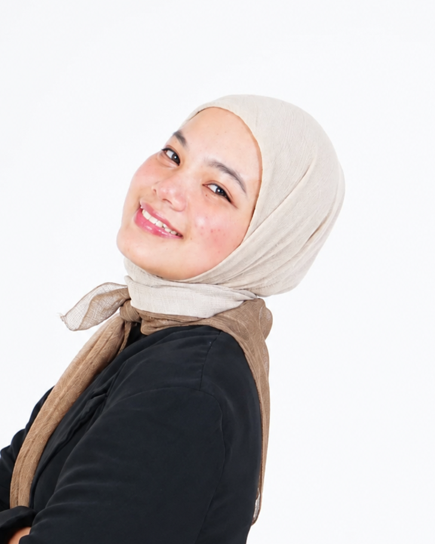
Creative Technologist | UI/UX Designer | Front-End Developer | 3D Generalist ✨
Selamat datang di portofolio saya! Saya berfokus pada desain grafis, UI/UX, front-end development, dan visualisasi 3D. Melalui perpaduan kreativitas dan teknologi, saya menciptakan solusi digital yang fungsional, estetis, dan mampu memberikan pengalaman yang berkesan bagi pengguna. Di samping aktivitas profesional, saya juga aktif dalam berbagai kegiatan organisasi dan sosial yang membantu mengembangkan kemampuan kepemimpinan, komunikasi, serta kolaborasi dalam tim. ✨🎨🖥️🧊🤝
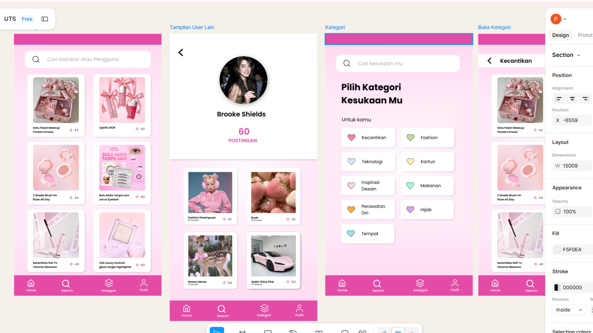
UX UI
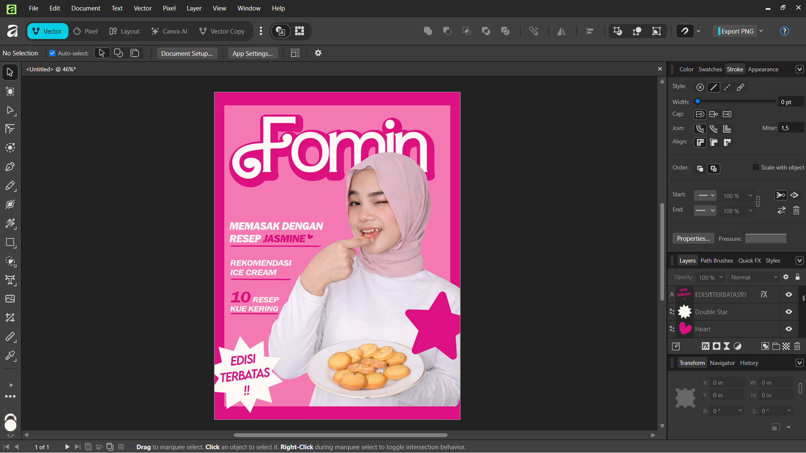
Graphic Designer (Magazine Cover Designer)
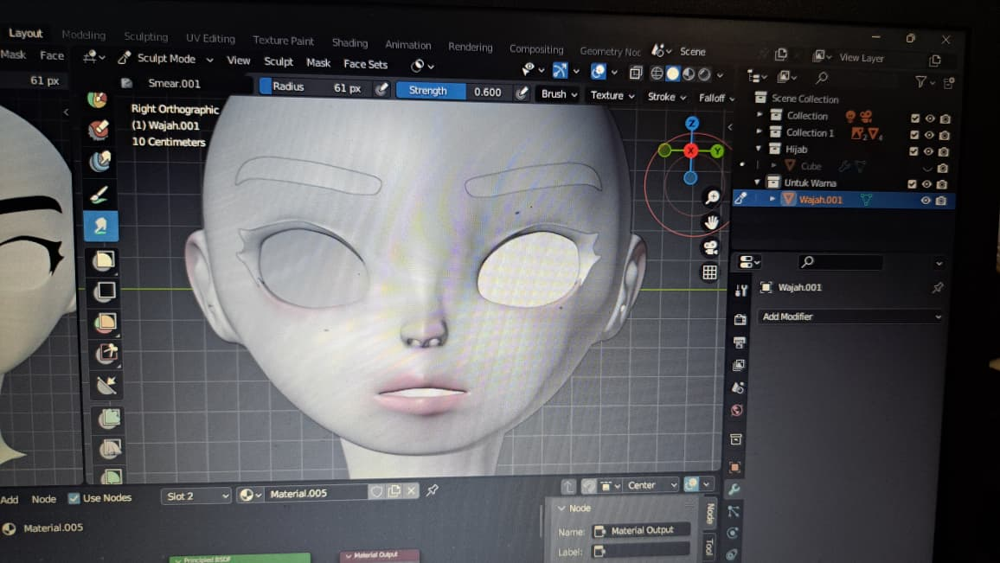
National Tech Fest Identity (Project)
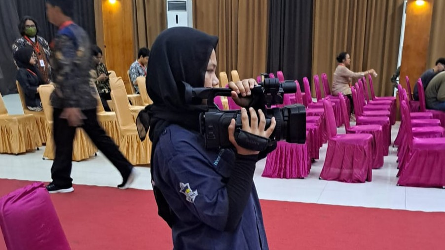
Hari Kesehatan Nasional
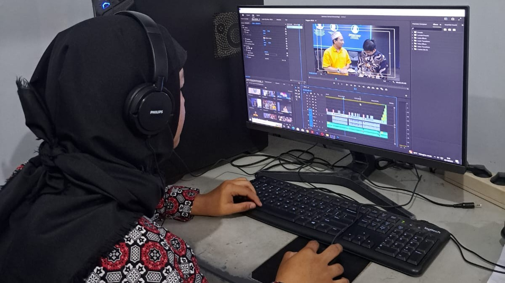
Event Documentation & Content Production
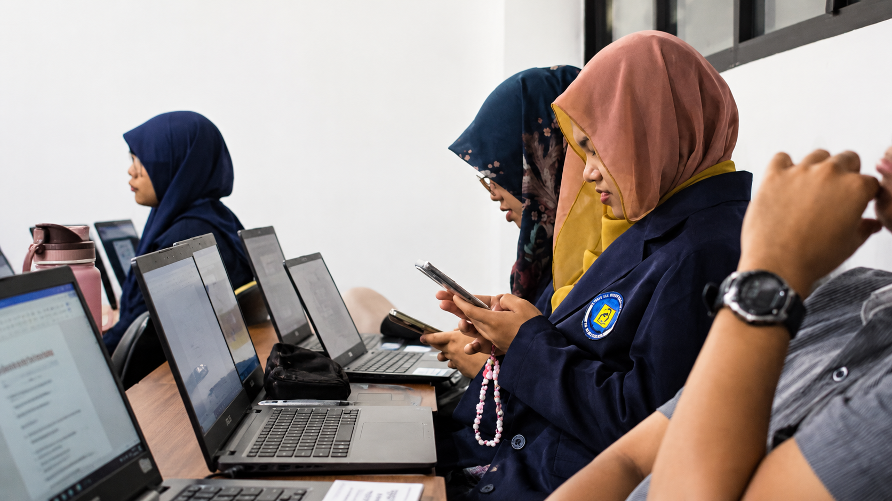
Proposal, Correspondence & Event Report Administration
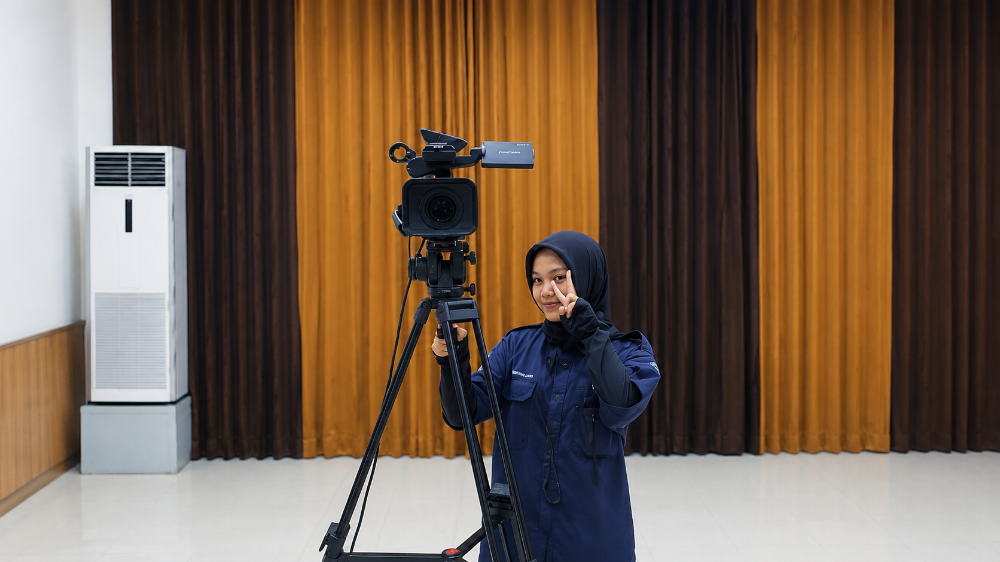
Mengoperasikan Kamera untuk Live Streaming Acara
Bertanggung jawab dalam pembuatan desain visual dan pengelolaan media sosial, mulai dari perancangan konten, publikasi, hingga pengembangan strategi konten untuk meningkatkan engagement serta memperkuat identitas dan komunikasi brand di platform digital.
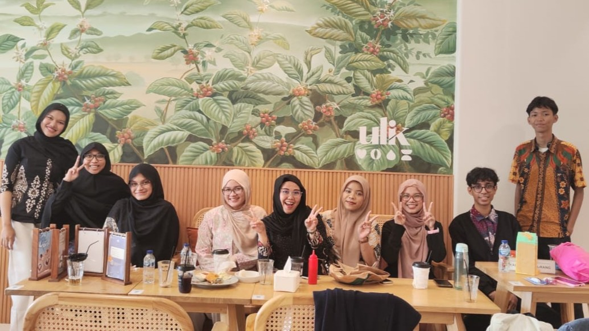
Berkontribusi dalam pembuatan dan pengelolaan konten digital melalui desain grafis, fotografi, videografi, editing foto dan video, pengoperasian live camera, serta pengelolaan media sosial untuk mendukung kebutuhan publikasi, promosi, dan branding perusahaan
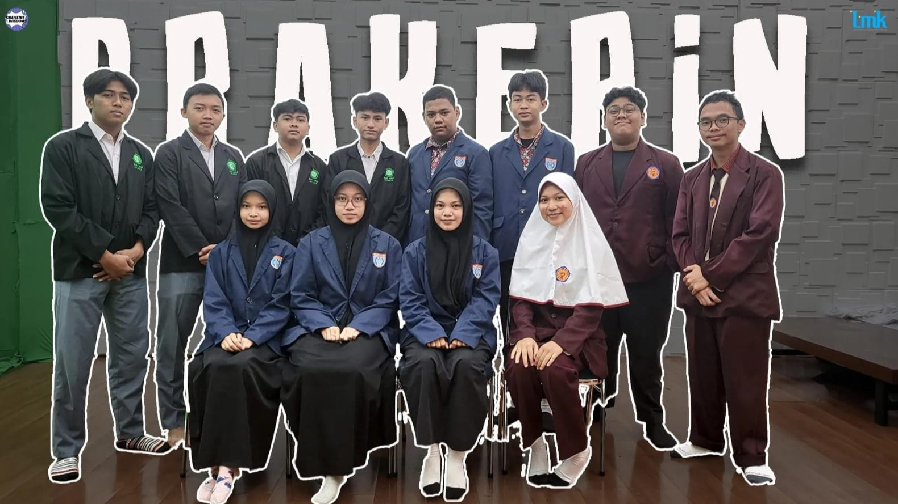
Bertanggung jawab mengoordinasikan kegiatan kehumasan, termasuk pengelolaan informasi, publikasi, dokumentasi, serta komunikasi eksternal organisasi untuk menjaga citra positif dan membangun hubungan yang baik dengan publik dan pihak terkait.
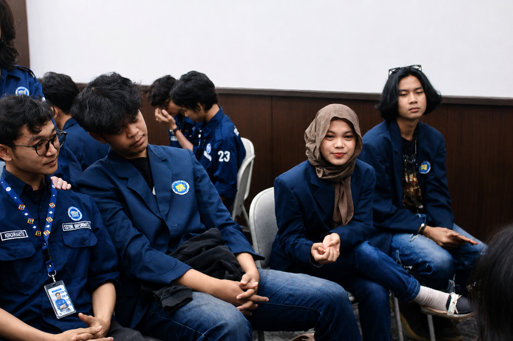
Bertanggung jawab dalam pengelolaan keuangan kegiatan acara nasional antar universitas, meliputi perencanaan anggaran, pencatatan pemasukan dan pengeluaran, pengawasan penggunaan dana, serta penyusunan laporan keuangan secara transparan dan akuntabel untuk mendukung kelancaran seluruh rangkaian acara.
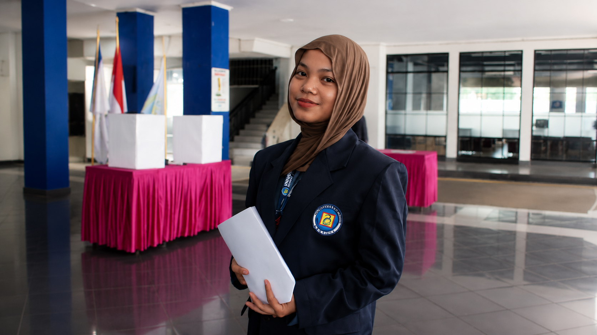
Bertanggung jawab memimpin dan mengoordinasikan seluruh rangkaian pelaksanaan acara, mulai dari perencanaan, pembagian tugas panitia, pengawasan jalannya kegiatan, hingga evaluasi akhir, serta memastikan acara berjalan sesuai tujuan, waktu, dan konsep yang telah ditetapkan.
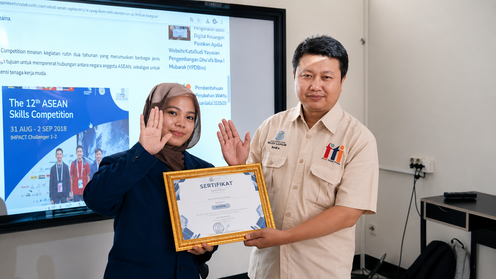
Bertanggung jawab memimpin dan mengoordinasikan seluruh rangkaian pelaksanaan acara, mulai dari perencanaan, pembagian tugas panitia, pengawasan jalannya kegiatan, hingga evaluasi akhir, serta memastikan acara berjalan sesuai tujuan, waktu, dan konsep yang telah ditetapkan.
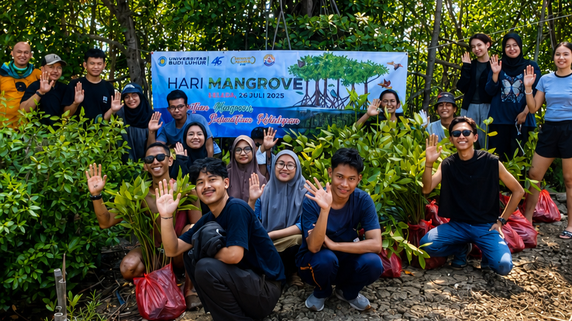
Mengelola keuangan organisasi tingkat RW/RT, termasuk pencatatan pemasukan dan pengeluaran, pengelolaan dana kegiatan warga, serta penyusunan laporan keuangan secara transparan dan akuntabel untuk mendukung berbagai program dan kegiatan sosial kemasyarakatan.
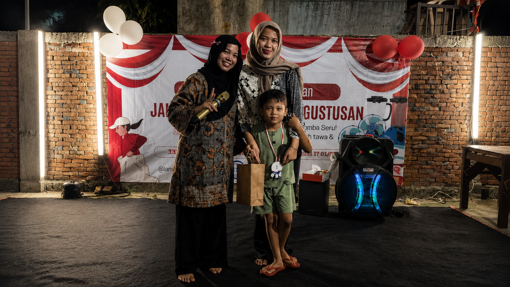
Membuat dan mengembangkan konten visual digital seperti desain grafis, materi media sosial, dan aset digital lainnya, serta mendukung proses produksi konten kreatif untuk kebutuhan branding, promosi, dan komunikasi di berbagai platform online.
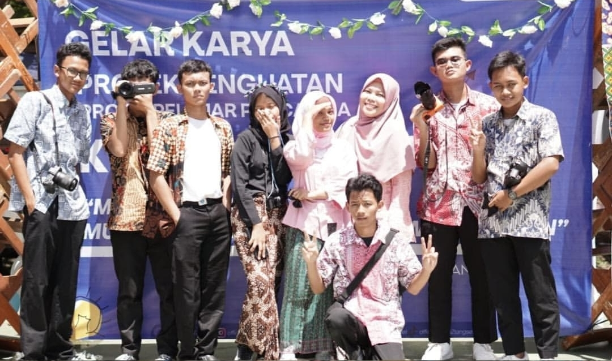